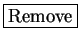

Next: Parameters
Up: Get Input
Previous: Wavelet Transforms
Contents
If you use STRFPAK's Preprocessing Menu options to preprocess your
raw experimental data, you will not need to go to this stage.
However, if you choose to preprocess your data with a routine outside STRFPAK, you will need to use this window to load up your preprocessed data.
These data must be in either ASCII or Matlab binary format with extensions  , or .
, or .
Figure 3.6:
Get datafiles window for the auditory example
|
|
Figure 3.7:
Get datafiles window for the visual example
|
|
Stimulus data files must contains a spatio-temporal
description of a stimulus,
 . Response data files contain
multiple trials of spike trains,
. For example, in the auditory system, represents
the time-varying amplitude of sound in a frequency band centered at
. Response data files contain
multiple trials of spike trains,
. For example, in the auditory system, represents
the time-varying amplitude of sound in a frequency band centered at  . In
the
visual system, represents the light intensity as a function
of position and time.
Trials should ideally be much longer than the expected duration of the STRF for best results.
Figures 3.6 and 3.7 show the
Get Datafiles Windows for
the auditory example and the visual example respectively.
In this window,
the user can choose stimulus and response input from the top left panel
of the window.
In this panel, there are two list boxes, for stimulus files and response files.
The list boxes display the files under current directories of the
stimulus and the response. The user
can interactively update the stimulus and
response directories by clicking the
or
buttons.
When the user clicks on a list item in the stimulus or the response list box,
one of the following happens:
. In
the
visual system, represents the light intensity as a function
of position and time.
Trials should ideally be much longer than the expected duration of the STRF for best results.
Figures 3.6 and 3.7 show the
Get Datafiles Windows for
the auditory example and the visual example respectively.
In this window,
the user can choose stimulus and response input from the top left panel
of the window.
In this panel, there are two list boxes, for stimulus files and response files.
The list boxes display the files under current directories of the
stimulus and the response. The user
can interactively update the stimulus and
response directories by clicking the
or
buttons.
When the user clicks on a list item in the stimulus or the response list box,
one of the following happens:
- If the item is a file, the file is selected.
- If the item is a directory, the GUI reads the contents
of that directory into the list box.
- If the item is a single dot (.), the GUI
updates the display of the current directory.
- If the item is a double dot (..), the GUI changes
to the directory up one level and populates the list box with
the contents of that directory.
To select multiple data sets, hold down the CTRL or Shift key while
clicking selections.
After selecting stimulus files from the stimulus list box and the corresponding
response files from the response list box, the user can click the
button to check if the file type is allowed. They will show on
the Show Data Pairs list box if their data format is OK.
The user can remove the selected data files by
pressing  button.
After the selection has been done, the user needs to specify data parameters
in the right bottom panel of the window by clicking
the pop-up menu Please Choose Spatial Domain and by filling
in the editable text field. These parameters
include data sampling rate (in Hz), dimensionality of spatial domain,
and low and high frequency (in Hz) for auditory STRFs.
For the auditory example, the data sampling rate is  Hz,
the spatial domain is a frequency band so the dimensionality
of the spatial domain is set as
Hz,
the spatial domain is a frequency band so the dimensionality
of the spatial domain is set as  .
The low frequency is
.
The low frequency is
 Hz and the high frequency is
Hz and the high frequency is  Hz since these are the lower and upper frequencies in the sample spectrograms. For the visual example,
the data sampling rate is
Hz since these are the lower and upper frequencies in the sample spectrograms. For the visual example,
the data sampling rate is  Hz. This spatial domain is
Hz. This spatial domain is
 since the stimulus is a time-varying two dimensional image.
since the stimulus is a time-varying two dimensional image.
Next: Parameters
Up: Get Input
Previous: Wavelet Transforms
Contents
2004-08-09